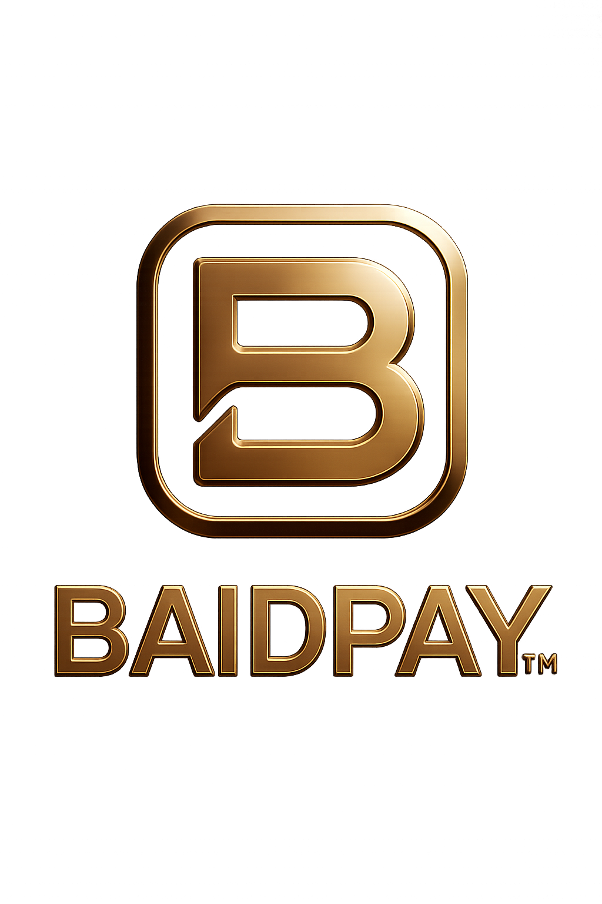
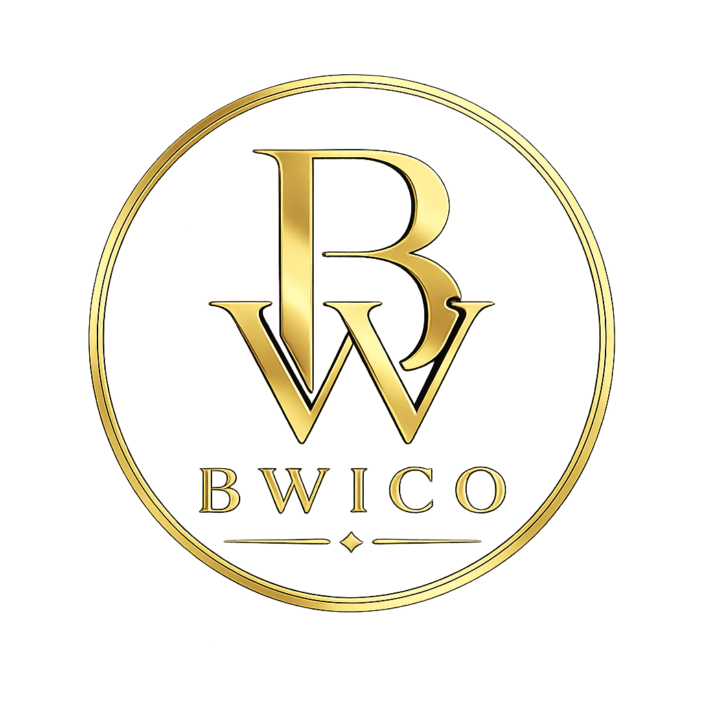
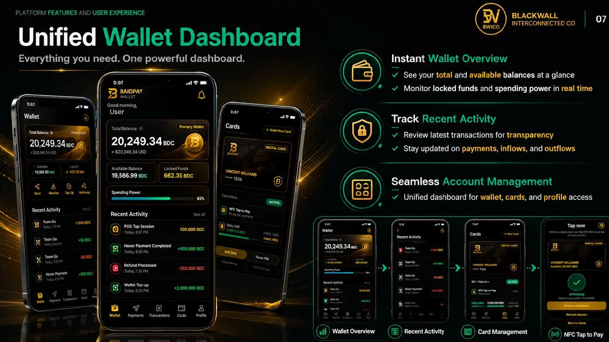
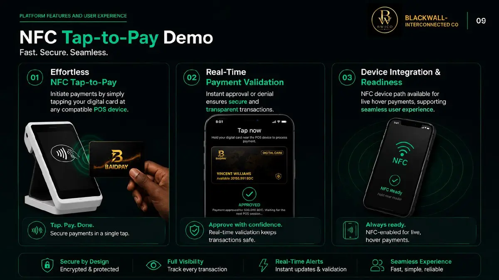
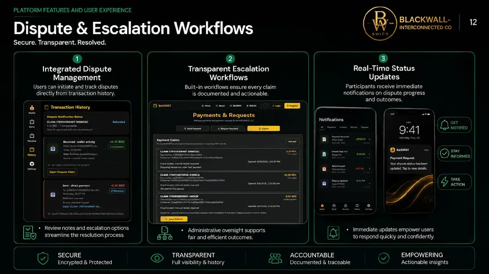
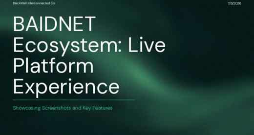

BWICO
Holding Company



BAIDNET is a developed hybrid financial and community-commerce platform connecting blockchain capabilities with a separately governed fiat transaction path designed for sponsor-bank integration. BlackWall-Interconnected is seeking $1.2 million to close the remaining legal, compliance, banking, and production-readiness gates to controlled market entry.
Holding Company
Hybrid Infrastructure
Payments Experience
The platform foundation has been developed and internally validated. This initiative is designed to close the external requirements separating BAIDNET from controlled commercial deployment.
Targeted capital for independent legal classification, compliance validation, sponsor-bank diligence, production enablement, and institutional deliverables.
Proposed allocations are planning benchmarks, not vendor quotations. Final costs depend on selected firms, negotiated scopes, jurisdictions, sponsor-bank requirements, and external review findings.
BAIDPAY product evidence documents developed customer, wallet, payment, card, merchant, and transaction-management experiences.

Balances, spending power, activity, account access, and unified wallet controls.

Customer authorization, device interaction, validation, and transaction confirmation.

Merchant-initiated sessions, customer notifications, approvals, and status visibility.

Transaction review, documented escalation, administrative oversight, and outcome tracking.
BAIDNET enables businesses to create membership-based products, services, and experiences for the BlackWall-Interconnected community.
Members enter through traditional payment methods supported by the FinTech layer. Membership activates participation in the network and provides the applicable BDC allocation or access required for designated offerings.
Pay the applicable membership fee through the BAIDNET FinTech path.
Receive the selected membership benefits and applicable BDC allocation.
Use BDC under the offering’s published rules to enter exclusive experiences.
Continuing business experiences create reasons for members to remain active.
These scenes illustrate the business models BAIDNET is designed to enable. They do not represent contracted participating businesses.

Designers can offer member access to limited-edition collections, private previews, and controlled releases.

Chefs, restaurants, and producers can create private dining, tastings, and limited culinary releases.

Agencies can connect member businesses with campaign development, production resources, and creator opportunities.

Inventors and businesses can access prototyping, specialized production, and collaborative development opportunities.
The current onboarding configuration establishes recurring business membership tiers with monthly BDC allocations.
| Tier | Monthly price | Monthly BDC allocation | Annual option |
|---|---|---|---|
| Founder | $4.99 | 1.5 BDC | 15% savings |
| Partner | $19.99 | 6.5 BDC | 15% savings |
| Stakeholder | $59.99 | 18.75 BDC | 15% savings |
| Steward | $199.99 | 75 BDC | 15% savings |
Members and businesses still operate in the broader economy. The FinTech layer provides the traditional-currency entry point for membership and eligible financial activity. BDC supports access and participation within the network’s designated experiences. Together, they connect the economy outside BWICO with opportunities created inside the community.
BlackWall-Interconnected is seeking support to complete legal classification, sponsor-bank integration, security validation, and controlled business activation. The initial objective is to onboard founding businesses, launch measurable member experiences, and demonstrate membership acquisition, retention, BDC participation, merchant activity, and community impact.
BAIDNET extends its existing architecture rather than creating a duplicate FinTech core. Blockchain and fiat experiences remain explicitly separated at the settlement layer while sharing disciplined transaction, evidence, API, and user-experience patterns.
Existing blockchain transaction workflows, validator-backed settlement, wallet valuation, payment execution, and auditable transaction evidence form the established platform foundation.
Fiat lifecycle actions, financial primitives, reconciliation, disputes, risk controls, idempotency, and sponsor-bank integration boundaries have been engineered and verified internally.
BAIDNET controls internal workflow representation and evidence. A sponsor bank remains authoritative for regulated bank execution records and settlement references when live integration is established.
A clear separation between what BAIDNET has completed internally and what requires external sponsor-bank validation protects the integrity of commercialization claims.
The controlled pilot is designed to convert product readiness into measurable market evidence. These figures are proposed targets, not completed outcomes.
BAIDNET’s commercialization work is presented with identifiable executive ownership and a clear commitment to evidence-based institutional engagement.
Vincent L. Williams founded BlackWall-Interconnected Co and serves as the principal architect of BAIDNET. He has directed the platform’s development from its original ecosystem model through blockchain infrastructure, payment capabilities, fiat-transaction architecture, governance controls, implementation verification, and commercialization planning.
His work centers on building financial infrastructure intended to expand access, economic participation, and institutional connectivity for historically underserved communities. He leads BAIDNET’s commercialization strategy, sponsor-bank engagement, technical accountability, and coordination of the legal and external approvals required for responsible market entry.
The BAIDNET Commercialization Initiative distinguishes verified internal engineering from outstanding partner, legal, and regulatory dependencies. Vincent remains directly accountable for presenting that distinction accurately to prospective financial institutions, investors, legal reviewers, and strategic partners.
The page provides the decision summary. Each linked resource provides the supporting product, commercialization, readiness, or technical evidence.
The funding request, external gaps, proposed allocations, 16-week pathway, completion criteria, and market-entry objective.
10 slides · approximately 4 minutesReview Investment Initiative →
For partners & communityBAIDPAY screenshots, community-commerce structure, readiness posture, pilot expansion, and proposed measurable outcomes.
18 slides · approximately 6 minutesExplore Platform Evidence →The internal-versus-external readiness boundary, bank-authoritative responsibilities, open production dependencies, and integration posture.
Institutional readiness assessmentView Readiness Assessment →Transaction lifecycles, APIs, routing, controls, evidence, reconciliation, sponsor-bank boundaries, verification results, and final closeout.
Formal technical verificationReview Technical Evidence →A cleaner diligence and outreach path for investors, financial institutions, strategic partners, and technical reviewers.
Complete the fields below and BAIDNET will prepare a structured outreach message.